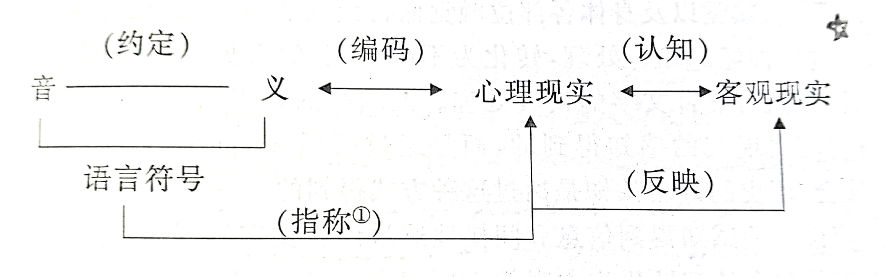
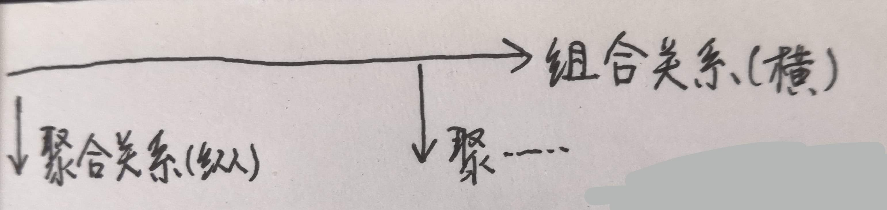

语言学纲要高分笔记
Table of Contents
0.1 Schedule
语纲最少一天一章 现汉最少三天一章
1 概述
1.1 导言
1.1.1 语言的性质（是什么）
- 人类的思维工具（人们进行沟通的主要表达方式。人们借助语言保存和传递人类文明的成果）语言的普遍性和思维能力的普遍性是一致的。语言的普遍性质，也是语言的最根本的性质。
- 人类最重要的交际工具（语言是人类特有的，语言依赖于人类社会，语言具有全民性）
- 语言是符号系统
1.1.2 语言学研究的对象
- 语言。
- 存在于语言社团中每个人头脑中的共同的语言形式结构是语言学研究的真正对象。
1.1.3 语言的产生和发展(重要理论问题)
- 语言的产生和起源（马克思主义语言起源学说）
- 劳动决定类语言产生的需要（社会条件）和可能（物质条件）
- 劳动促进了人类发音器官的改进，也促进了思维的产生。（物质条件）
- 到了“彼此间非说不可“的程度（社会条件）。
- 于是产生了音义之间没有必然联系的有声语言。
- 语言的发展
- 对语言最早的理性认识：古典文明时期，人类积累了对自然、社会对象的理性认识和相关抽象概念。
- 对语言系统研究的开始：随着文明的发展，为了文明的延续，需要研究各种时期和类别的文化典籍，于是需要研究语言。
- 语言学的三大发源地：中国、印度、希腊-罗马
- 中国：先秦典籍（即文言文）；“小学”（中国传统的语文学），研究文字、音韵和训诂。抓住汉字、分析形体、探求音义。
- 印度：宗教典籍；古代的梵语，研究一般语言的语音和语法
- 希腊-罗马（欧洲）：希腊的众多文化典籍，由罗马人继承；古拉丁语；语言研究深入，形成传统的西方语言学。
1.1.4 语言学的意义
- 从语言学的研究对象和发展过程可以看出，语言学是关于人类社会生活中的最 基本现象 的研究之一。
- 人类对对语言性质的认识直接 影响到 人类对于自身和周围世界的一些 基本理念 。
- 语言学像数学、逻辑学、物理学、生命科学等基础学科一样，是一项 基础研究 。
- 语言研究是人类 探求自身奥秘 的重要途径，具有 永恒的魅力和价值 。
1.1.5 语言研究方面、流派的划分
- 共时语言学：也称静态语言学，通常来说，语言系统大致可以分为语音、语法、语汇等几个子系统。语言研究可以分别描写语言每个子系统在某一个特定时期的共时状态和不同子系统之间的关联，这是共时语言学的研究角度。
- 历史语言学：也称动态语言学，通常来说，语言系统大致可以分为语音、语法、语汇等几个子系统。研究语言每个子系统在不同时期所发生的变化及其变化中不同子系统之间的关联，这是历史语言学的研究角度。
- 理论语言学：也称普通语言学，通过多语言的比较探求所有人类语言的语音、语法、语汇在共时结构上的共性，探求所有人类语言在历史发展中的共同规律。综合各种语言的研究成果，归纳成语言的一般规律，这就是理论语言学的任务。
- 应用语言学：语言学分支之一。运用语言学的知识来解决其他科学领域与语言相关的问题的学科。19世纪末库尔德内就提出了“应用语言学”的概念，但其形成则在20世纪40-50年代。有狭义与广义之分。狭义的应用语言学，指对本族语、第二语言及外国语教学所作的研究，相当于语言教学法研究，而不是类似应用物理、应用数学那样的应用科学。广义的应用语言学，指各种与语言有关的实际问题所作的研究。
1.1.6 语言的结构
- 由语音（外在形式）、意义（内容）统一构成。
- 分为：语音、词汇、语法、语义和语用。
1.1.7 语言的应用
- 解读经典，传承文化，并且在文化交流中起重要作用。
- 在科学技术中有重要作用。如病理语言学，把语言学成果用于分析、治疗语言障碍的临床症状。
- 在社会生活中有重要作用。语言学研究的成果会为国家制定的语文政策、推广普通话提供参考和依据。
1.2 语言的功能
1.2.1 语言的社会功能
- 语言的信息传递功能
- 信息传递功能是语言最基本的社会功能，它是人类社会辉煌文明的基础。
- 人类靠语言的信息传递来维持联系，维护人类社会中的关系网络，每一个社会都必须有自己的语言。
- 信息的传递是社会中人与人交流的基本方式。通过信息的交流，人们才可以在社会中彼此 分享各自的经验感知，更好地分工协作 。
- 身体手势等非语言的形式，辅助语言来传递信息；文字是建立在语言基础之上的再编码形式；旗语之类则是建立在语言或文字基础之上的再编码形式。 语言是人类社会信息传递第一性的、最基本的手段 。
- 语言的人际互动功能
- 人际互动主要是为了建立或者保持某种社会关联。
- 人际互动是指说话者表达自己的情感态度和意图，对受话者施加了影响，得到相应的反馈，达到实际效果。
- 在人际互动中，受话者的话有时是对说话者态度的反馈，交际双方在主观情态上彼此互动。
- 日常见面时寒暄问候的话语，主要目的不是传递客观信息，而是为了人际关系的互动。
1.2.2 语言的思维功能
- 语言和思维（A是什么，B是什么，A和B的关系是 不可分割/对立统一。谢谢徐涛老师。）
- 语言是人类社会的交际工具，是人类的思维工具，语言是符号系统。
- 思想是人们对现实世界的认识，思维是认识现实世界时大脑运动的过程。思维以感觉器官的感知和知觉为基础，同时借助一定的知识和经验，可以概括事物的本质和内在联系。语言是思维活动的动因和载体，是思维成果的贮存所。
- 语言和思维形影相随，不可分离。思维必须在语言材料的基础上进行。语言是思维的工具。
- 逻辑学把概念判断和推理看作思维的基本形式，这些思维的基本形式都要依靠语言。
- 从心理学的角度看，思维是知识的认知、获取和运用的过程，是一个信息加工的过程。信息的传递是社会现象，信息的生成和理解过程是在人的大脑中进行的心理思维过程。
- 认知神经科学的研究成果证明思维作为人脑的活动，具有大脑神经生理的基础。
- 语言&思维的生理基础
- 胼胝体连接左右两个半球，左脑和右脑分工合作，控制着相反的身体部位。大脑的左半球，掌管着人类的语言活动。
- 大脑有人类特有的语言功能区：听觉性语言中枢、说话中枢、视觉性语言中枢和书写中枢。
- 儿童学习语言的过程
- 儿童学习语言，需要现成的语言环境。在学习语言的过程中，同时认识世界、发展思维。
- 学习过程：独词句（从现实事物概括的过程）；两个词的组合（抽象事物属性，分析要素的过程）；实词句（摆脱事物形象的影响，越来越注意语言本身的事实，通过语言认识世界）
- 儿童学习语言，依赖于先天大脑的结构和功能。儿童语言的习得和心智的发展是同步的，并且有临界期。
- 聋哑人的语言&思维
- 聋哑人能够思维。聋哑人和常人一样，有健全的大脑和发音器官。
- 聋哑人可以利用听觉符号以外的感觉器官来传递信息表达思想。
- 声音是抽象思维，最方便最灵活的依托形式。
- 思维能力和思维方式（思维能力是全人类共同的，语言是各民族不同的）
- 人类大脑的生理构造都一样，所以思维能力没有民族性全人类都一样的，都遵循同样的思维规律。
- 没有语言都包含着，一个民族认识客观世界的特殊方式，我们学会一种语言，也就学会了该民族的独特的思维方式。
- “机器思维”
- 思维是大脑的机能，是反映客观世界的一种能动的过程。人工智能机器，是人类思维的延伸。
- 机器不能能动地反映客观世界，只有人类可以。
1.3 语言是符号系统
1.3.1 语言的符号性质
- 语言和说话
- 语言是符号系统，是人类思维和交际的工具。语言中的词是有限的组织，语言材料和规则也是有限的。
- 说话包括说话的行为和说出的话，都属于语言现象，语言现象是无穷尽的。话，理论上可以很长，但实际上不会太长，因为太长了，说话的人说到后来会忘记前面说过的内容。
- 说话的行为和说出的话语总是具体的在发音、词语选择、句子形式的运用等方面都有个人的特点。而每个人说话或听话时使用的材料和规则确是有一般性的，是社会每个成员共同的。语言是能够生成话语的符号系统，而具体说出来的话语是人们运用语言系统所产生的结果。
- 每个人什么时候说话，想说什么内容是自由的，但说话时运用的语言材料、遵循的语言规则则服从于社会的习惯。所以语言的社会规律对每个语言使用者都具有强制性。
- 语言学研究的语言是指由有限的材料和有限的规则组成的系统，而不是只具体的话语。语言研究就是要把隐藏在无数话语中的语言找出来。
- 语言和符号
- 语言是符号系统，符号包含形式和意义两个方面。形式是人们的感官可以感知的，这些可以感知的形式都具有专门的意义。形式有了意义，就有了符号的功能。符号的形式和意义是不可分离的、具有一般性，也没有本质上的和自然属性上的必然联系。语言符号帮助人达成对外界的认知，储存认知的成果，并且发展人的认知能力。
- 征候和符号不同，征候是事物本身的特征。他传递的某种信息可以通过他自身的物质属性来推断，征候的形式和隐含的信息有本质的必然的联系。
- 语言符号与客观现实的关系：

1.3.2 语言符号的系统性
- 语言符号的任意性和线条性
- 20世纪初，瑞士的语言学家德·索绪尔作为语言符号的基本性质提出的。
- 任意性：语言符号和符号一样，具有任意性。语言符号的任意性，就是指语言符号的语音形式和意义之间，没有自然属性上的必然联系，具有社会约定的关系。这种社会约定性只能被动的接受，没有随意更改的权利。
- 线条性：语言符号在使用中是以符号序列的形式出现，符号只能一个跟着一个依次出现，短时间的线条上绵延，不能在空间的面上铺开。语言结构规则就隐含在这些线性序列中。
- 语言符号的层级体系
- 语言符号系统是一种分层装置，这种装置靠组合和替换来运转。
- 音系层：音位->音节->音步->……语调段
- 语法层：语素->词->词组/短语->小句->句子
- ①语言的层级体系分为底层和上层。底层的一部分是音位和由音位组成的音节，为语言符号准备了形式。②上层是音义结合的符号和由符号组成的符号序列。上层分三级，第一级语素，是构词材料。第二级词，是造句材料。第三级句子，是交际基本单位。③整个体系靠组合关系和聚合关系运转。
- 组合关系和聚合关系
- 组合关系（名词解释★★★）：符号和符号之间横向组合起来的关系，索绪尔称为“句段关系”。
- 聚合关系（名词解释★★★）：在组合结构中具有相同的作用，能够相互替换，他们自然地聚集成群，彼此的关系称为“聚合关系”。索绪尔称为“联想关系”。
- 语言中的每个符号都处在既可以和别的符号组合，又可以被别的符号替换这样的两种关系当中。
- 组合关系和聚合关系是语言系统中的两种根本关系，不但语言符号的词、语素处在这两种关系之中，而且构造符号的音位和意义也都处在这两种关系之中，组合关系和聚合关系是组成语言系统的一个纲。
- 例子。

1.3.3 语言符号系统是人类特有的
- 人类语言符号和其他动物“语言”的根本区别（语言是人类独有的交际工具。）
- 任意性（音义关系任意）：任意性是符号最重要的特征，没有任意性或任意性程度很低，都说明其符号性很弱。
- 单位的明晰性：人类说出来的话是有清晰的单位的，动物所谓的语言，总体上都是不可分的。
- 结构的二层性：人类语言是一种两层的结构装置，音系层和符号层两个层面上都有大小不同的单位。相反，动物的语言不能分解成单位，谈不上有结构，更不用说有结构的二层性。
- 能产性：能产性是指人们总是能够运用有限的语言手段，通过替换和组合创造出新的话语来。动物的“语言”只能表达有限的信息。他所能传递的信息是固定的，是受刺激限定的。
- 传授性：没有现实的语言环境，人类就学不会一种语言。动物的语言则是与生俱来的本能，不用学习。
- 不受时、地环境的限制：人类语言的信息传递不受当时当地环境的限制。而动物的交际，都是由当时当地的刺激引起的，是对具体情境的感性的反应。
- 语言是其他动物和人类无法逾越的鸿沟
- 掌握语言需要有发达的大脑和灵活的发音器官，也就是说要有抽象思维的能力和发音的能力。
- 其他动物不具备语言能力，语言是人类独有的。
2 本体理论
2.1 语音
2.2 语法
2.3 语义
2.4 语用
3 演变
3.1 同一语言的变化
3.2 不同语言的接触
3.3 语言混合-“洋泾滨”和混合语
3.4 语言系统的演变
4 tools&tips
4.1 tools
4.1.1 字体
粗体
斜体
删除线
下划线
下标： H2 O(这里必须留一个空格要不然2和O都成为小标，目前还不知道怎么去掉空格)
上标： E=mc2
等宽字： git
4.2 tips
学霸学习的时候，认知更轻松？